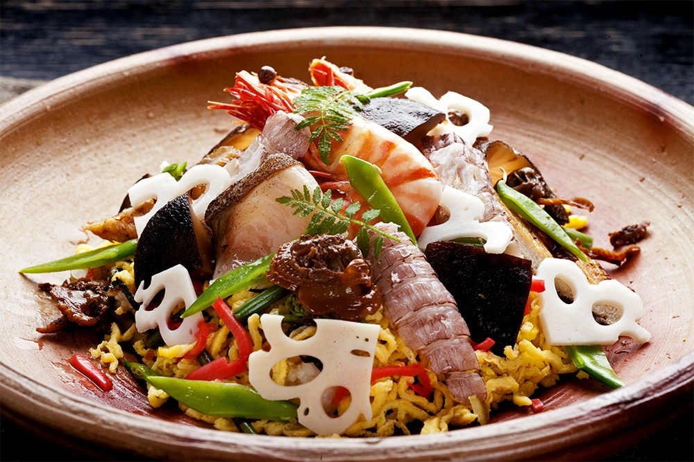
| 営業時間 | 11:00〜22:00（ラストオーダー21:00）／ランチタイムは11:00〜14:00（土日祝を除く）／名物の持ち帰りは朝10:00から販売 |
|---|---|
| 定休日 | 年中無休（ネタ・シャリがなくなり次第終了する場合あり） |
| 住所 | 岡山県岡山市北区駅元町1-1 さんすて岡山2F |
| 予約 | 未確認（公式サイトに予約可否の記載なし。電話086-227-7337で要確認） — ☎ 086-227-7337 ／ 公式サイト |
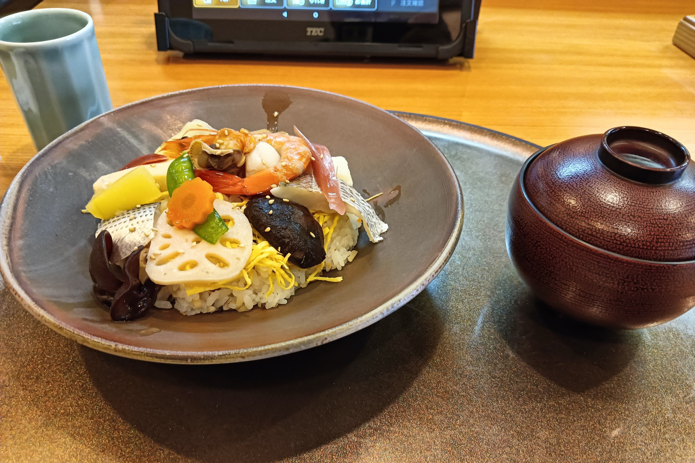
| 営業時間 | 昼 11:30〜14:00（入店は13:30まで・L.O.13:30）／夜 17:00〜21:00（入店は20:00まで・L.O.20:00）。日曜は昼のみ営業 |
|---|---|
| 定休日 | 毎週月曜日、第1・第3・第5火曜日、毎週日曜日の夜（※公式サイトに「年内は火曜営業」の注記あり） |
| 住所 | 岡山県岡山市北区奉還町2丁目16-17 |
| 予約 | 要予約（電話のみ。備前ばらずしは3営業日前まで、岡山ばらずしの持ち帰りは2日前までに要予約） — ☎ 086-252-2402 ／ 公式サイト |
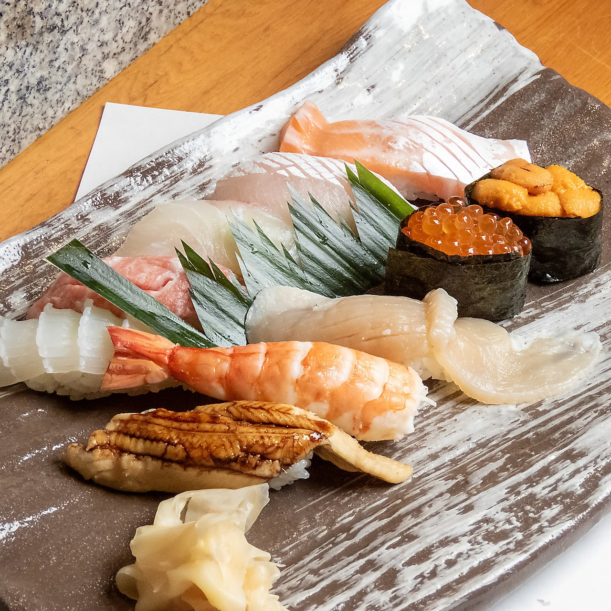
| 営業時間 | 11:00〜14:00（料理・ドリンクL.O.13:30）／17:00〜22:00（料理・ドリンクL.O.21:30） |
|---|---|
| 定休日 | 定休日なし（公式サイトは年末年始12月30日〜1月1日と2月1日を店休と案内） |
| 住所 | 岡山県岡山市北区田町2丁目11-8 |
| 予約 | 可（電話およびホットペッパーグルメのネット予約） — ☎ 086-225-1975 ／ 公式サイト |
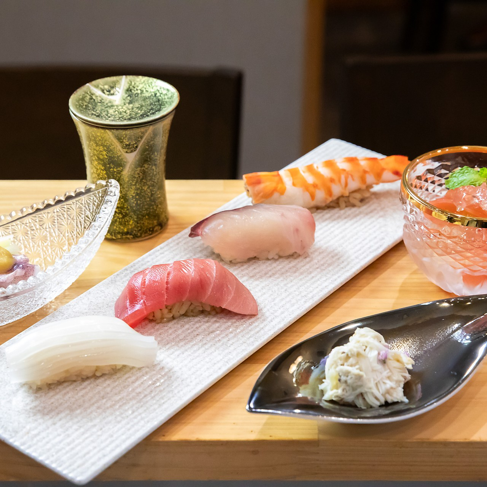
| 営業時間 | 月・火・木・金 17:30〜23:00（料理L.O.22:30／ドリンクL.O.23:00）／土・日 12:00〜14:00（料理L.O.13:00。12:00コース一斉スタート）、18:00〜23:00（料理L.O.22:30）。ネタ切れ次第終了 |
|---|---|
| 定休日 | 第1・第3火曜日、毎週水曜日 |
| 住所 | 岡山県岡山市北区柳町1丁目2-23 |
| 予約 | 可（電話およびホットペッパーグルメのネット予約。コース制のため予約推奨） — ☎ 086-237-8989 |
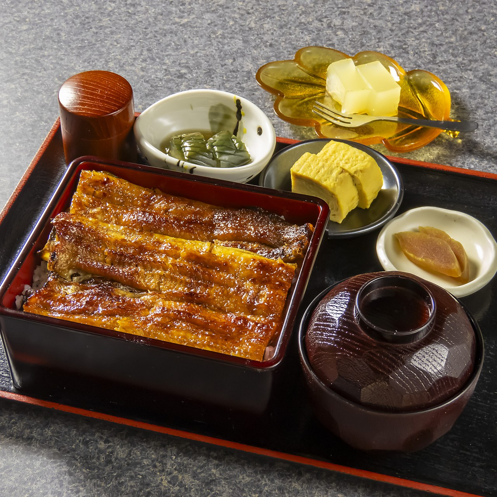
| 営業時間 | 17:30〜22:00（料理・ドリンクL.O.21:30）。昼の営業はなし |
|---|---|
| 定休日 | 毎週月曜日 |
| 住所 | 岡山県岡山市北区田町2丁目4-13 |
| 予約 | 可（電話およびホットペッパーグルメのネット予約。個室は予約推奨） — ☎ 086-238-4847 |
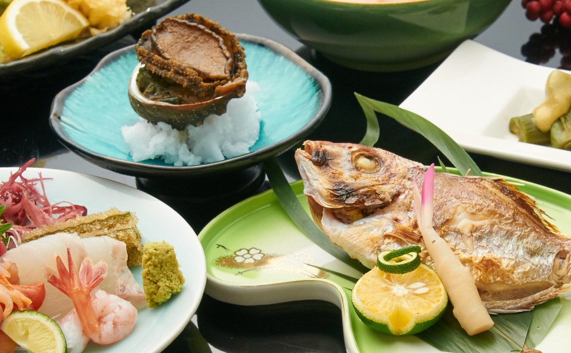
| 営業時間 | 17:00〜22:00（入店は20:30まで）。昼の営業はなし |
|---|---|
| 定休日 | 日曜日 |
| 住所 | 岡山県岡山市北区表町2-7-65 |
| 予約 | 可（電話、またはTableCheckのネット予約） — ☎ 086-223-1515 ／ 公式サイト |
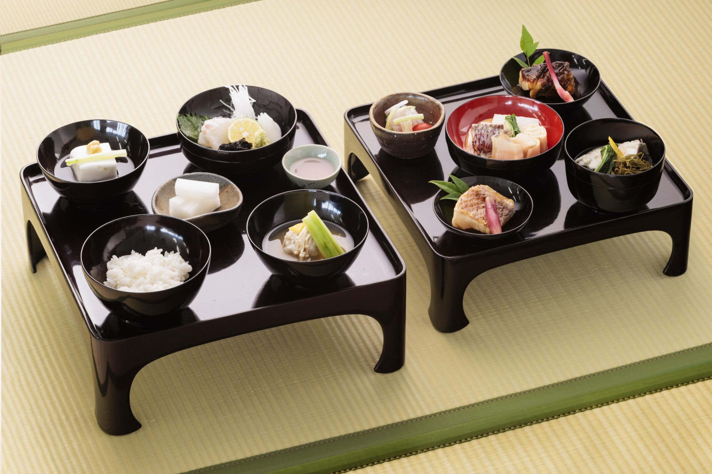
| 営業時間 | 11:30〜21:00（岡山観光WEB掲載）。ホットペッパーグルメは12:00〜13:00、17:00〜19:00を入店の目安として掲載しており、時間帯は要確認 |
|---|---|
| 定休日 | 年始（ホットペッパーグルメ掲載。岡山観光WEBには休業日の記載なし） |
| 住所 | 岡山県岡山市北区後楽園1-9 |
| 予約 | 要予約（全室個室のコース制。電話086-272-3171） — ☎ 086-272-3171 ／ 公式サイト |
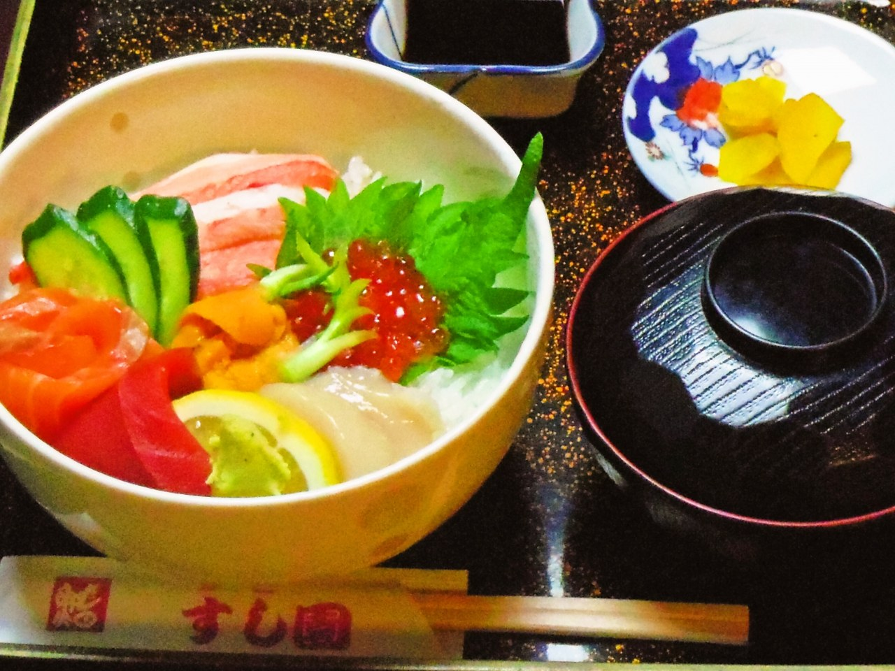
| 営業時間 | 11:00〜14:00（料理L.O.13:45／ドリンクL.O.13:50）／17:00〜21:00（料理・ドリンクL.O.20:30） |
|---|---|
| 定休日 | 毎週水曜日 |
| 住所 | 岡山県岡山市南区妹尾2307-1 |
| 予約 | 可（電話およびホットペッパーグルメのネット予約） — ☎ 086-282-3322 |
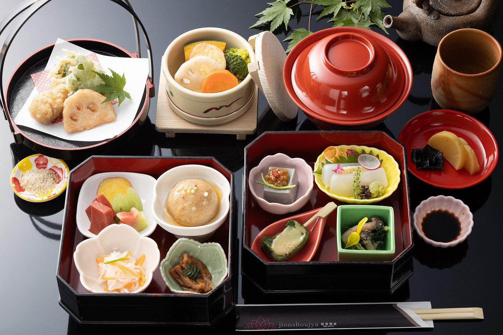
| 営業時間 | 昼 11:00〜15:00（L.O.14:00）／夜 17:00〜21:00（L.O.19:00）※土日祝の夜は予約制。電話受付は9:00〜18:00 |
|---|---|
| 定休日 | 月曜日（祝日の場合は営業し、翌日が振替休業） |
| 住所 | 岡山県岡山市中区米田26-5 |
| 予約 | 要予約（席のみの予約は不可で、料理と合わせて予約する。電話086-278-1555または公式サイトの予約フォーム。夜は2名から） — ☎ 086-278-1555 ／ 公式サイト |
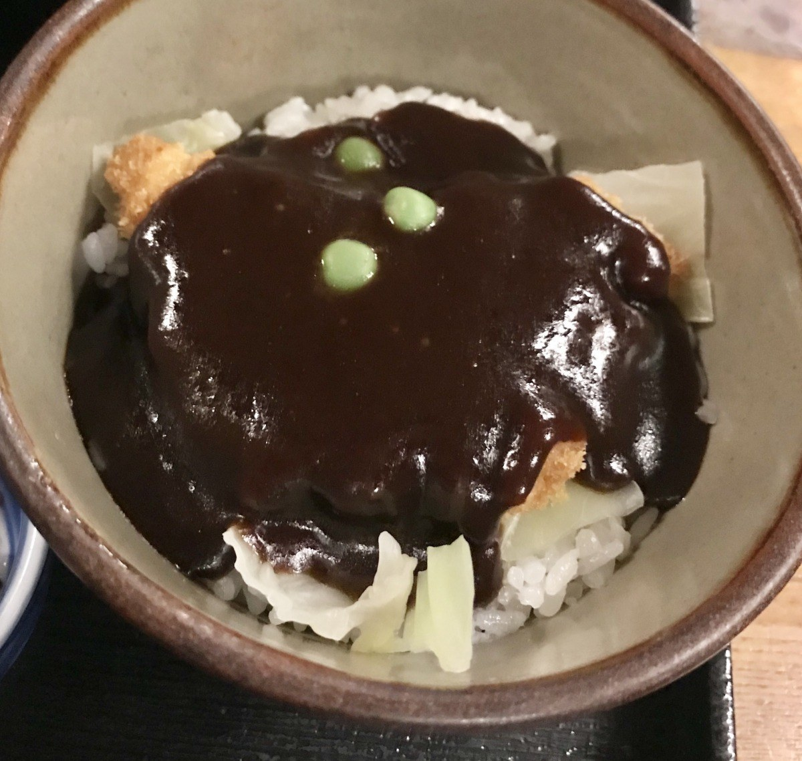
| 営業時間 | 火〜金 11:00〜15:00(L.O.)／土・日・祝 11:00〜14:30(L.O.)、17:00〜20:30(L.O.) |
|---|---|
| 定休日 | 月曜日（祝日の場合は翌日） |
| 住所 | 岡山県岡山市北区平和町1-10 野村ビル1F |
| 予約 | 不要（並んで入る方式。席の予約を受けているかは未確認） — ☎ 086-222-2234 ／ 公式サイト |
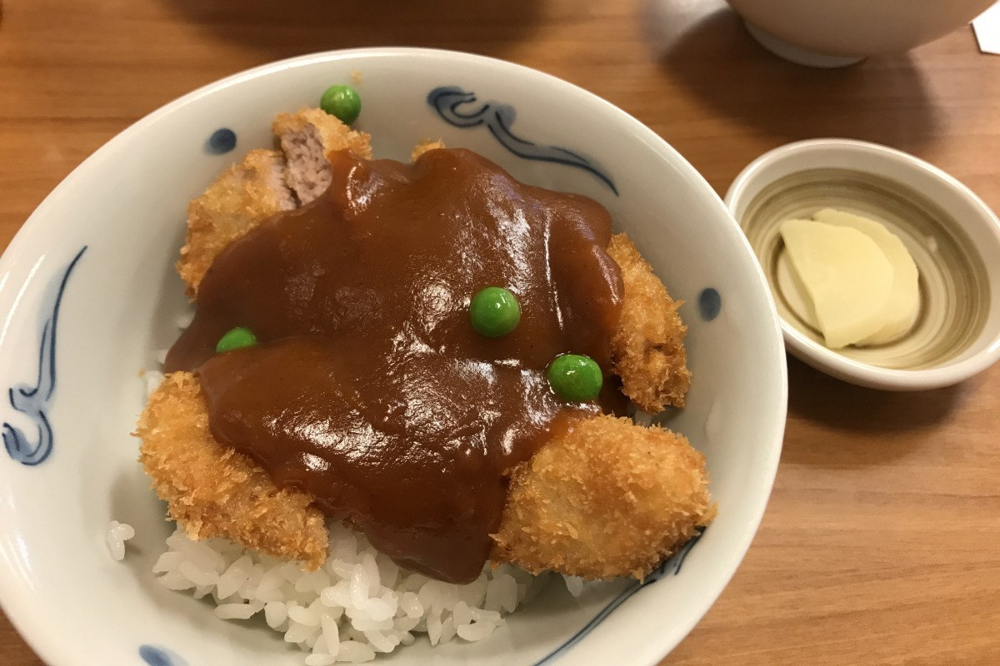
| 営業時間 | 11:00〜15:00（14:30頃 L.O.）／17:00〜19:00（18:30頃 L.O.） |
|---|---|
| 定休日 | 火曜日（臨時休業は公式サイトで事前告知） |
| 住所 | 岡山県岡山市北区表町1-9-7 |
| 予約 | 不要（席の予約受付は確認できず。公式サイトの通販は中華そばのみ） — ☎ 086-232-3944 ／ 公式サイト |
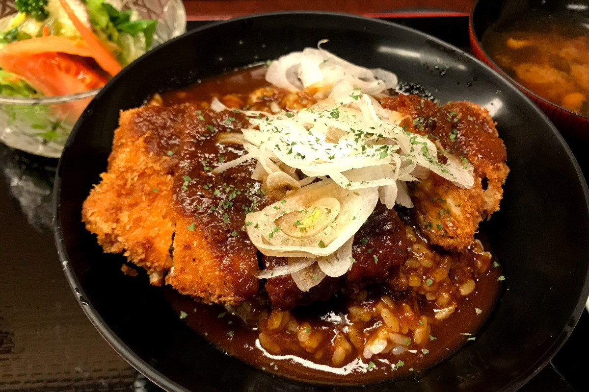
| 営業時間 | 11:00〜15:00（オーダーストップ14:30）／17:00〜（商品が売り切れ次第終了） |
|---|---|
| 定休日 | 火曜日 |
| 住所 | 岡山県岡山市北区表町1丁目7-1 |
| 予約 | 要確認（電話のみ。ネット予約の受付なし） — ☎ 086-222-5560 |
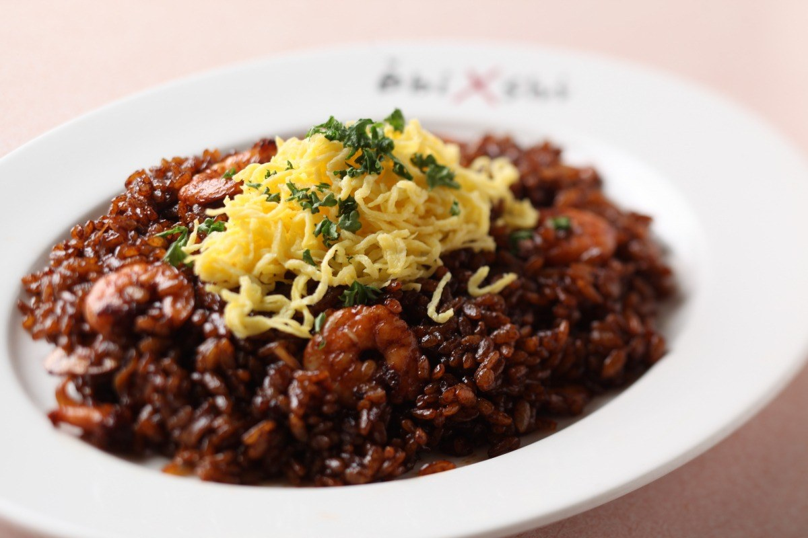
| 営業時間 | 11:00〜22:00（岡山観光WEB 2024年11月時点）※ホットペッパーグルメの掲載情報は 11:00〜14:30／17:00〜21:00 で食い違う |
|---|---|
| 定休日 | 火曜日（岡山観光WEB）※ホットペッパーグルメの掲載では水曜日 |
| 住所 | 岡山県岡山市北区万成西町2-53 |
| 予約 | 不可（ネット予約の受付なし） — ☎ 086-251-6221 ／ 公式サイト |
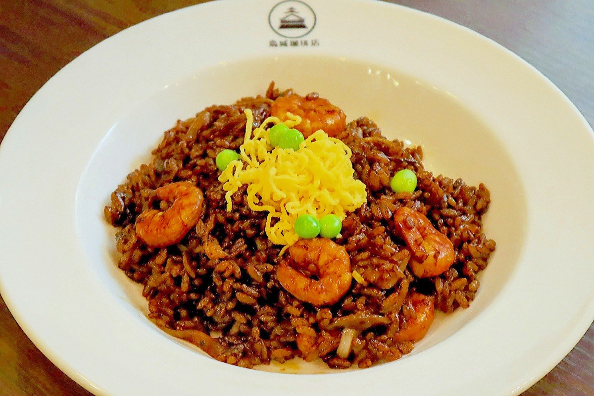
| 営業時間 | 月・水〜日・祝 11:00〜20:00（料理L.O. 19:30／ドリンクL.O. 19:30） |
|---|---|
| 定休日 | 火曜日（火曜が祝日の場合は営業し、水曜に振替休業） |
| 住所 | 岡山県岡山市北区石関町5-1 ホテルエクセル岡山1F |
| 予約 | 可（ホットペッパーグルメでネット予約可。日曜・祝日は予約不可） — ☎ 086-227-5566 |
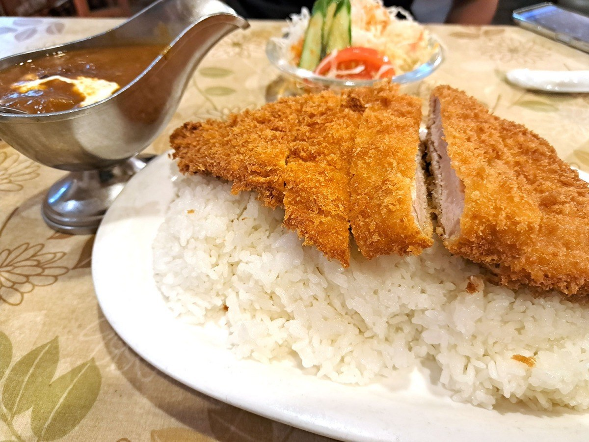
| 営業時間 | 11:00〜20:30（岡山観光WEB 2025年1月時点）※ホットペッパーグルメの掲載では 月 11:00〜15:00（L.O.14:30）／木・金 11:00〜14:30、17:30〜20:30（L.O.20:00）／土・日 11:00〜20:30（L.O.20:00） |
|---|---|
| 定休日 | 火曜日（岡山観光WEB）※ホットペッパーグルメの掲載では火・水曜日 |
| 住所 | 岡山県岡山市北区中山下1-9-40 新岡山ビルB1 |
| 予約 | 要確認（電話のみ。ネット予約の受付なし。貸切は可） — ☎ 086-223-1273 |
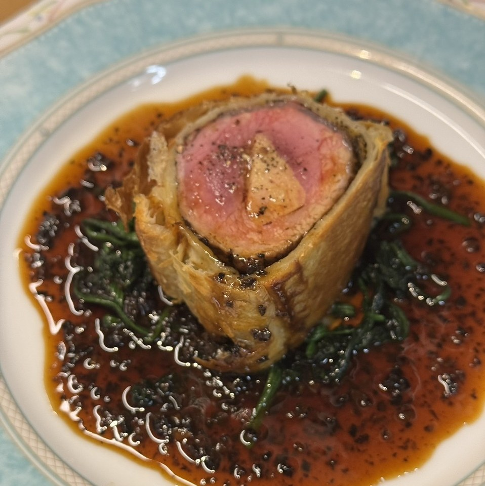
| 営業時間 | 月・木〜日 11:30〜15:00（料理L.O.14:00／ドリンクL.O.14:00）、17:30〜21:30（料理L.O.20:30／ドリンクL.O.21:00） |
|---|---|
| 定休日 | 火曜日・水曜日、毎月最終日曜日 |
| 住所 | 岡山県岡山市北区野田屋町1丁目7-20 中野ビル1F |
| 予約 | 可（ホットペッパーグルメでネット予約可。夜は予約で満席のことが多い） — ☎ 086-230-2780 ／ 公式サイト |
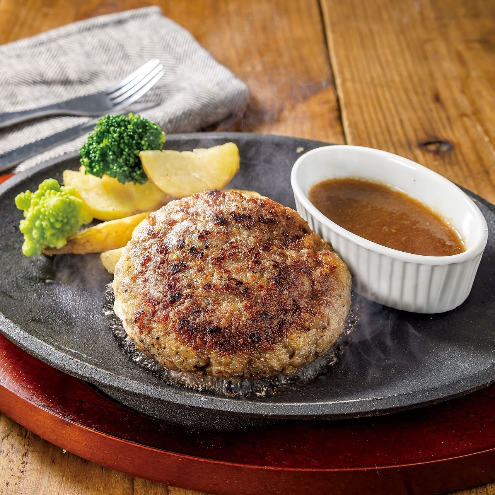
| 営業時間 | 11:00〜22:00（料理L.O. 21:30／ドリンクL.O. 21:30） |
|---|---|
| 定休日 | 無休 |
| 住所 | 岡山県岡山市北区駅元町地下一番街5号 |
| 予約 | 可（ホットペッパーグルメでネット予約可） — ☎ 086-233-0309 |
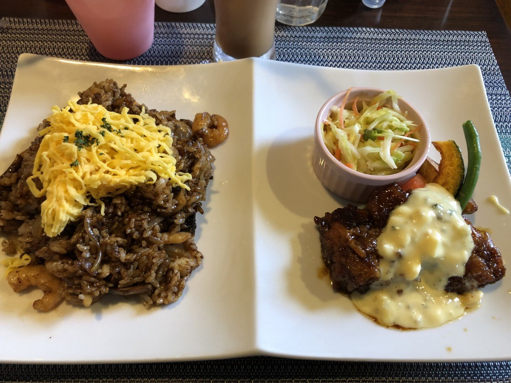
| 営業時間 | 9:00〜21:00（岡山観光WEB 2024年11月時点）※ホットペッパーグルメの掲載では 9:00〜22:00 |
|---|---|
| 定休日 | 無休 |
| 住所 | 岡山県岡山市南区箕島1317-1 |
| 予約 | 要確認（電話のみ。ホットペッパーグルメでのネット予約は受付停止中） — ☎ 086-250-1361 |
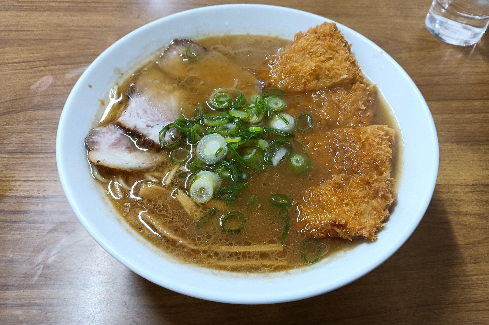
| 営業時間 | 10:30〜19:30（売り切れ次第終了） |
|---|---|
| 定休日 | 木曜（祝日の場合は翌日） |
| 住所 | 岡山県岡山市北区奉還町2-5-25 |
| 予約 | 不要（席のみ。予約の可否は未確認） — ☎ 086-252-1400 |
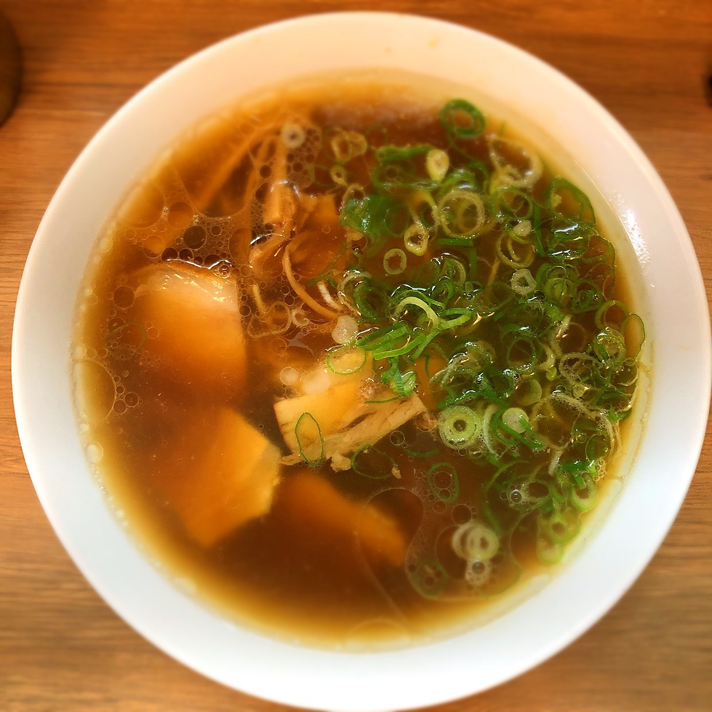
| 営業時間 | 11:00〜19:30 |
|---|---|
| 定休日 | 水曜（祝日の場合は前後に振替） |
| 住所 | 岡山県岡山市北区奉還町2-3-8 |
| 予約 | 不要（席のみ。予約の可否は未確認） |
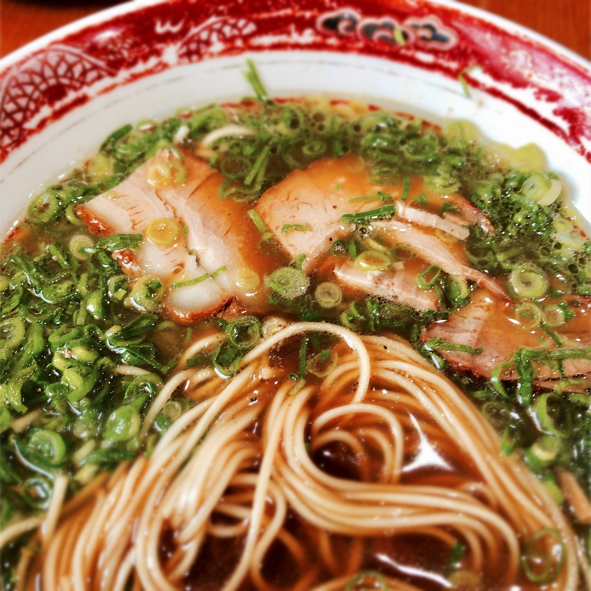
| 営業時間 | 11:30〜翌1:00 |
|---|---|
| 定休日 | 水曜 |
| 住所 | 岡山県岡山市北区本町5-13 |
| 予約 | 不要（席のみ。予約の可否は未確認） |
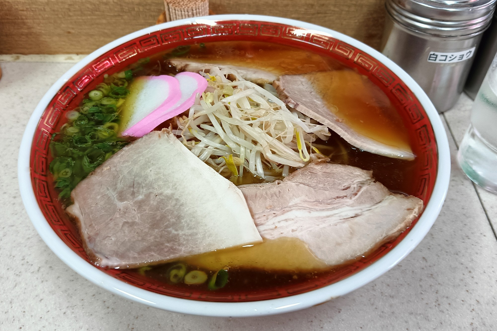
| 営業時間 | 10:30〜14:30（売り切れ次第終了） |
|---|---|
| 定休日 | 土曜・日曜・祝日 |
| 住所 | 岡山県岡山市北区天神町1-19 |
| 予約 | 不可（8席のみ・相席あり） — ☎ 086-223-7057 |
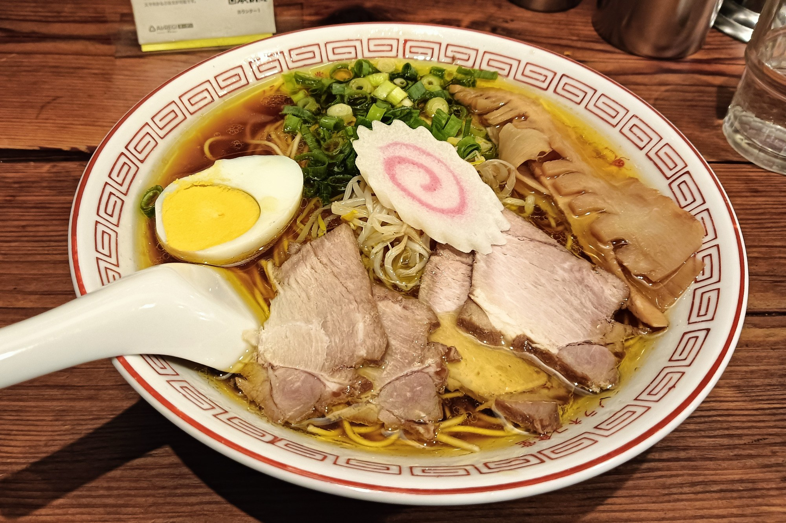
| 営業時間 | 11:30〜翌0:00（料理L.O. 23:30・ドリンクL.O. 23:30） |
|---|---|
| 定休日 | 火曜 |
| 住所 | 岡山県岡山市北区表町1-9-46 |
| 予約 | 可（ネット予約あり。ただし11:30〜13:59はネット予約の対象外） — ☎ 090-8509-5743 |
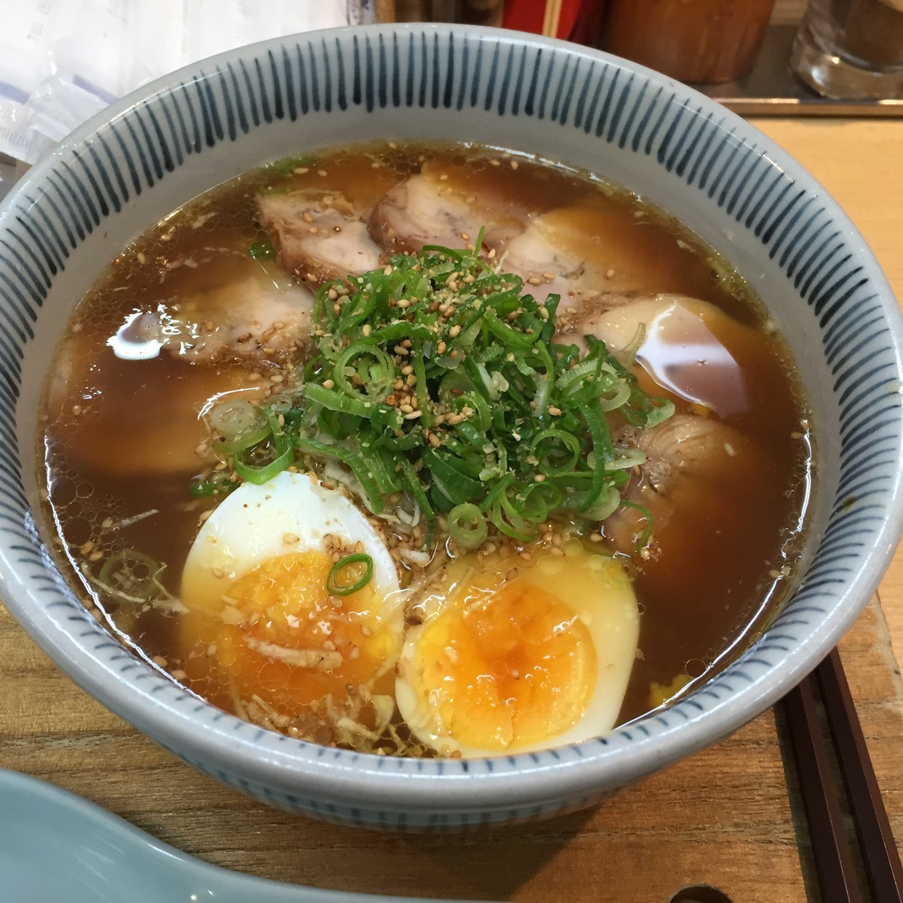
| 営業時間 | 水・木・金 11:00〜15:00／17:00〜19:00（L.O. 18:45）、土・日・祝 11:00〜19:00（L.O. 18:45） |
|---|---|
| 定休日 | 月曜・火曜（月曜が祝日の場合は翌日） |
| 住所 | 岡山県岡山市北区表町1-7-24 |
| 予約 | 不可（カウンター12席のみ） |
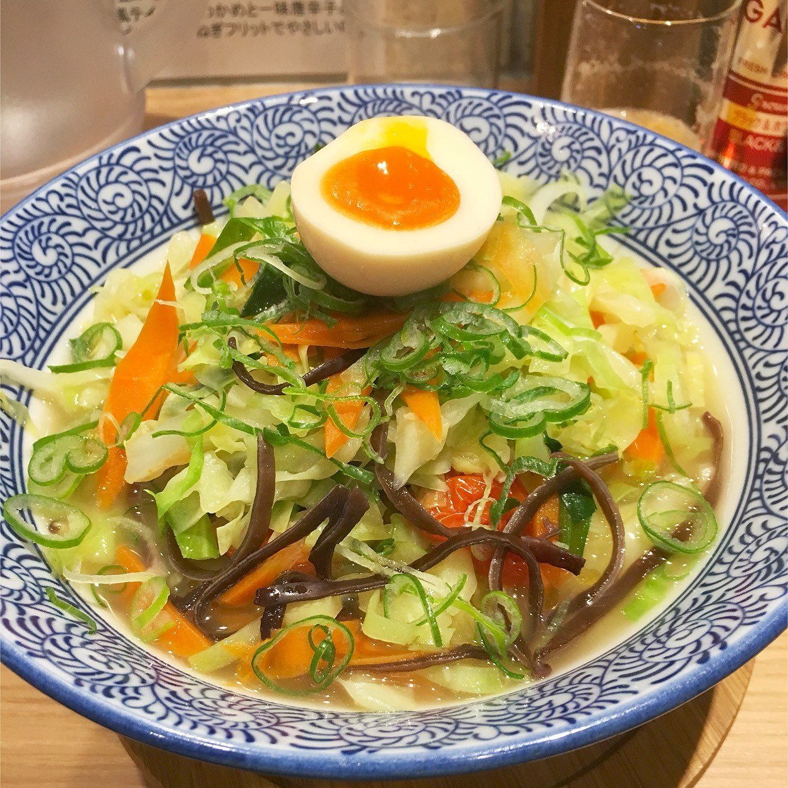
| 営業時間 | 11:00〜15:00（料理L.O. 14:00）／17:00〜20:00（料理L.O. 19:00） |
|---|---|
| 定休日 | 不定休（年始は休むことがある） |
| 住所 | 岡山県岡山市北区表町2-3-63 |
| 予約 | 可（ネット予約あり） |
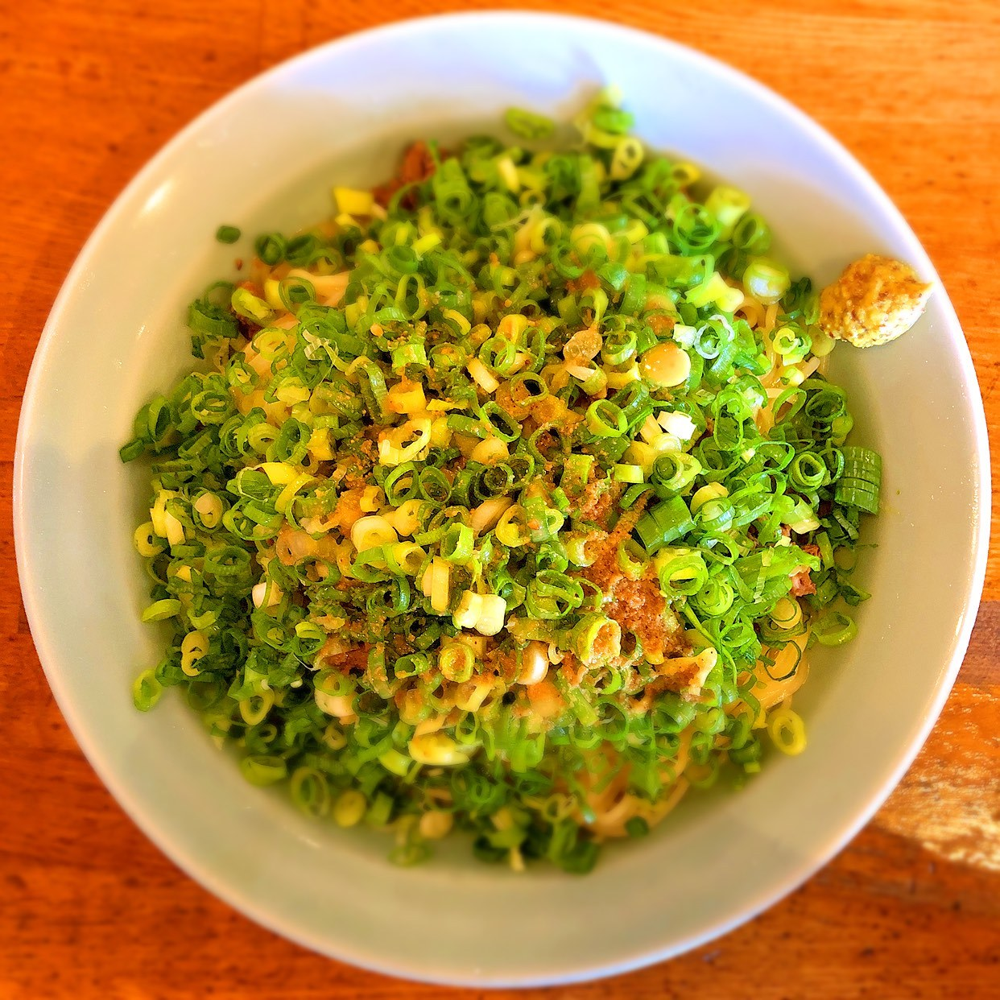
| 営業時間 | 月〜土 11:00〜翌2:00（L.O. 1:30）、日 11:00〜21:00 |
|---|---|
| 定休日 | 第3火曜 |
| 住所 | 岡山県岡山市南区泉田328-7 |
| 予約 | 不要（席のみ。予約の可否は未確認） |
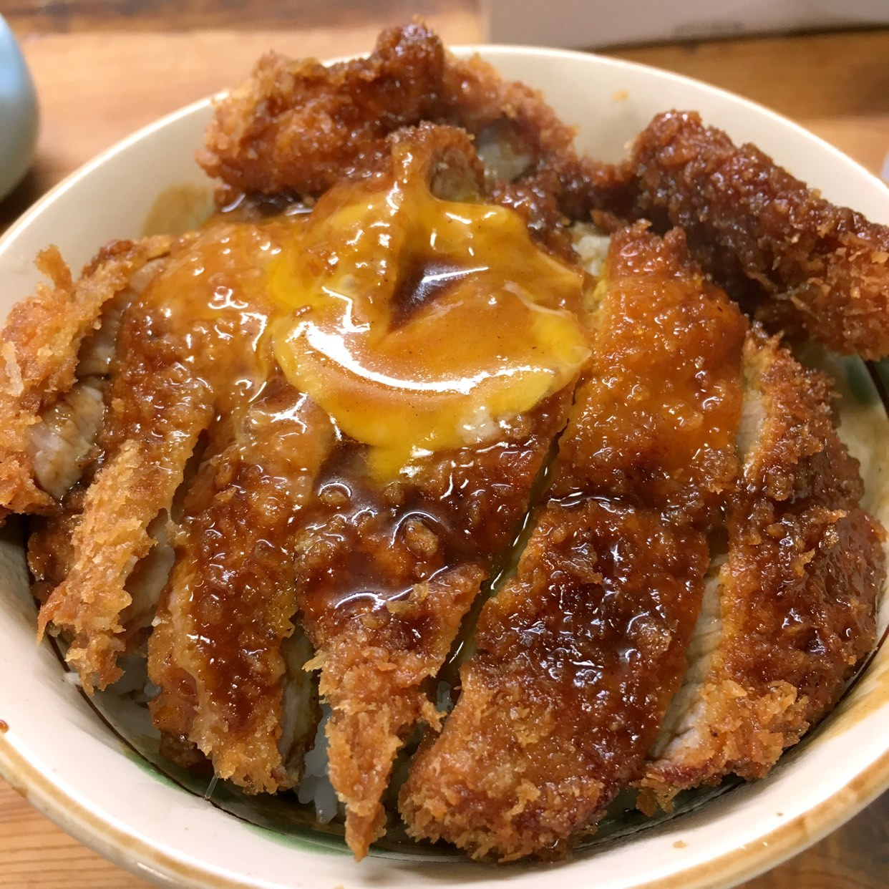
| 営業時間 | 月・金 11:30〜16:00、土・日・祝 11:30〜17:00（売り切れ次第終了） |
|---|---|
| 定休日 | 火曜・水曜・木曜（木曜は営業との情報もあり未確認） |
| 住所 | 岡山県岡山市北区表町2-3-60 |
| 予約 | 不可（24席のみ・予約不可） — ☎ 086-222-6112 |
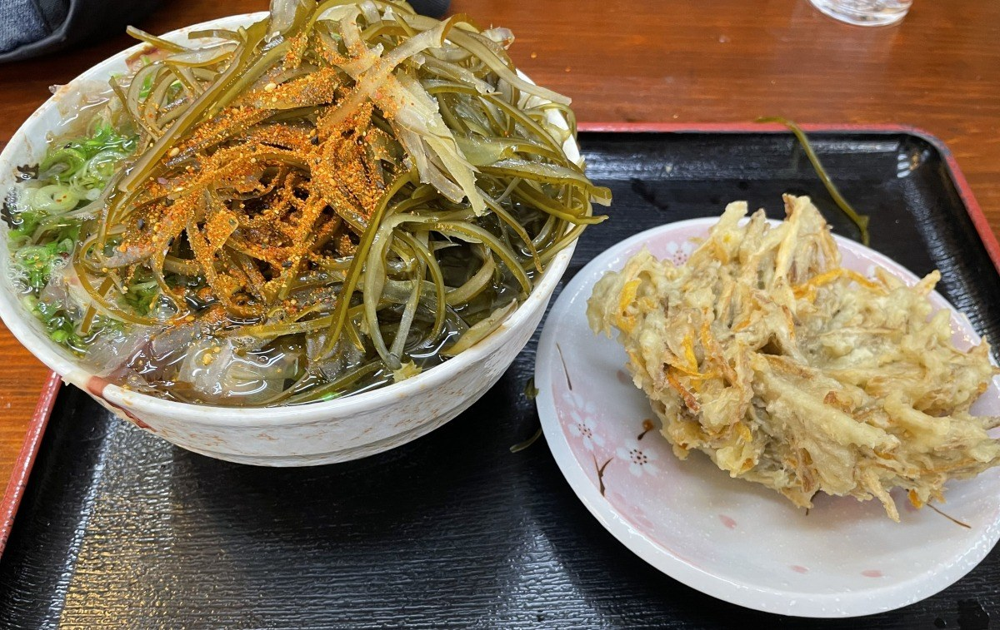
| 営業時間 | 10:00〜20:30（L.O.20:00） |
|---|---|
| 定休日 | 1月1日〜3日（ほかは年中無休） |
| 住所 | 岡山県岡山市中区平井6-7-17 |
| 予約 | 不要（セルフ方式。予約の可否は未確認） — ☎ 086-273-5472 ／ 公式サイト |
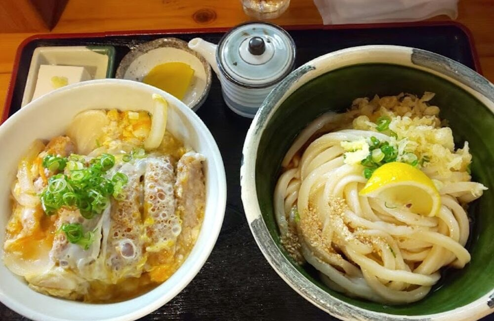
| 営業時間 | 11:00〜15:00（麺が無くなり次第閉店） |
|---|---|
| 定休日 | 日曜日 |
| 住所 | 岡山県岡山市北区内山下2-3-5 房野ビル1階 |
| 予約 | 未確認 — ☎ 086-222-7650 ／ 公式サイト |
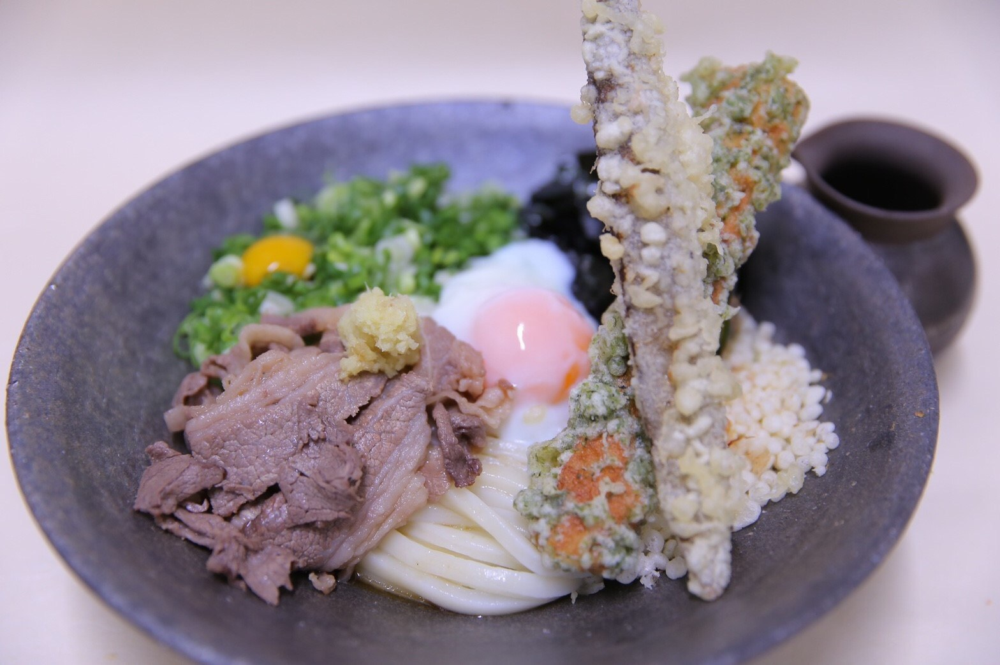
| 営業時間 | 月〜土・祝 11:00〜15:00（L.O.）／17:30〜20:00（L.O.）は予約のみ営業（コース料理は月〜金、21:00 L.O.・21:30閉店） |
|---|---|
| 定休日 | 日曜日 |
| 住所 | 岡山県岡山市北区奉還町2-3-6 |
| 予約 | 可（夜は予約のみ） — ☎ 086-253-8686 ／ 公式サイト |
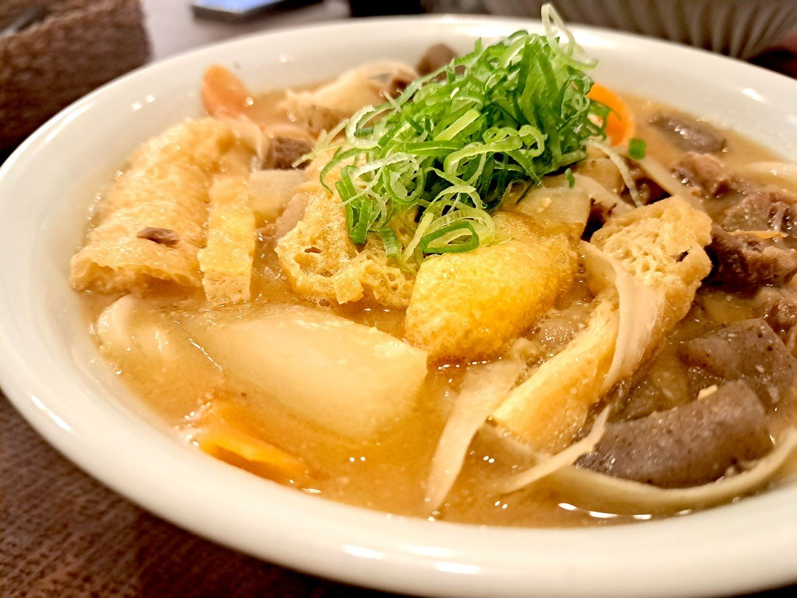
| 営業時間 | 平日11:00〜15:00・17:00〜21:00／土日祝11:00〜21:30 |
|---|---|
| 定休日 | なし（年中無休） |
| 住所 | 岡山県岡山市北区表町2-2-85 |
| 予約 | 未確認 — ☎ 086-222-6001 ／ 公式サイト |
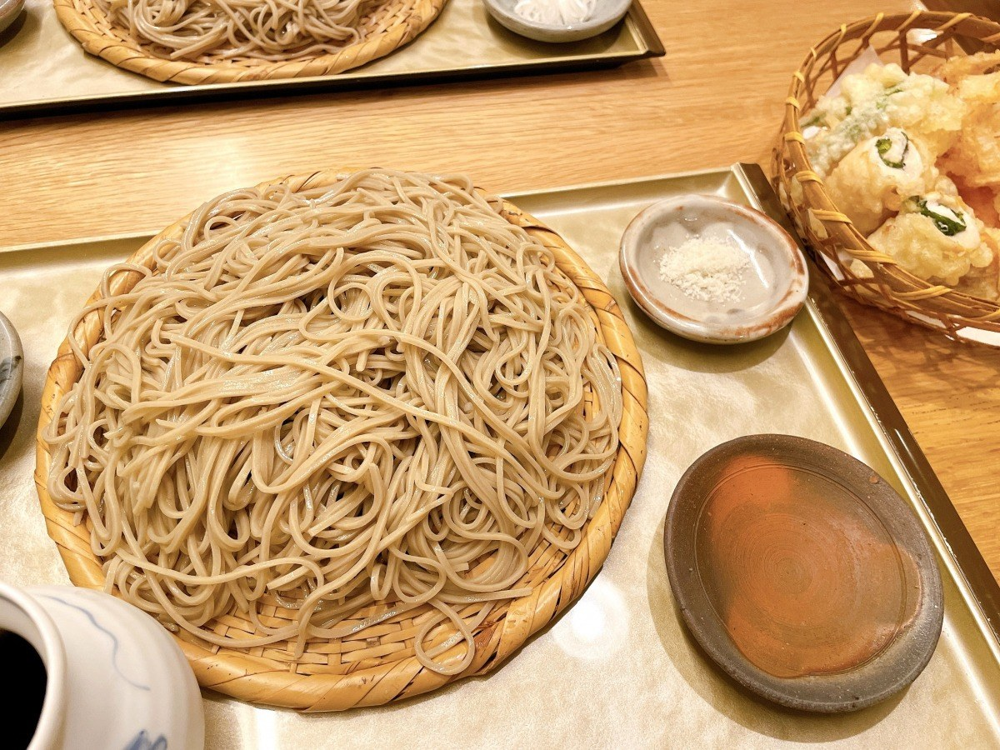
| 営業時間 | 11:30〜14:30（売り切れ次第終了）／18:00〜22:00（売り切れ次第終了） |
|---|---|
| 定休日 | 月曜日 |
| 住所 | 岡山県岡山市北区蕃山町2-12 |
| 予約 | 未確認 — ☎ 086-224-1890 |
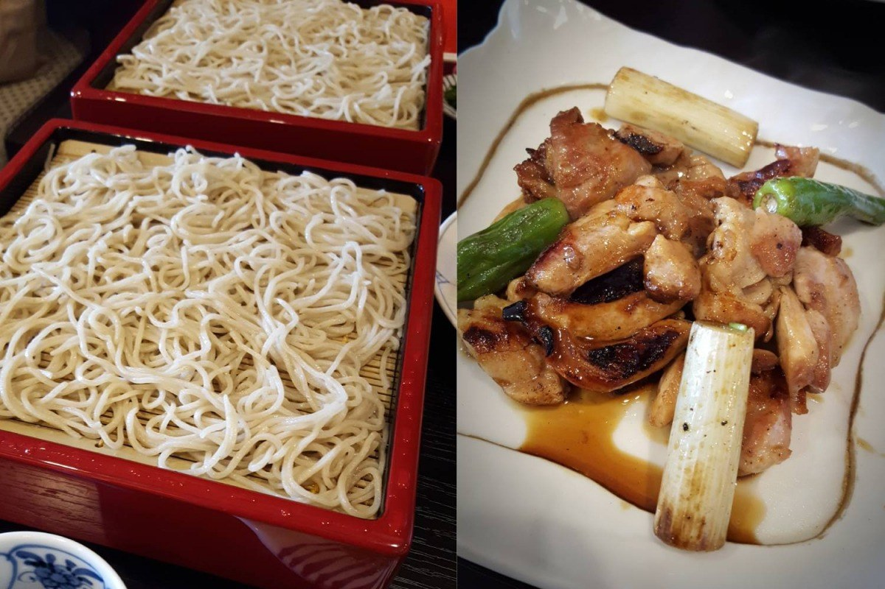
| 営業時間 | 11:00〜17:00（売り切れ次第終了） |
|---|---|
| 定休日 | 水曜日（祝日の場合は翌日） |
| 住所 | 岡山県岡山市北区幸町4-26 大重ビル1F |
| 予約 | 未確認 — ☎ 086-226-8266 |
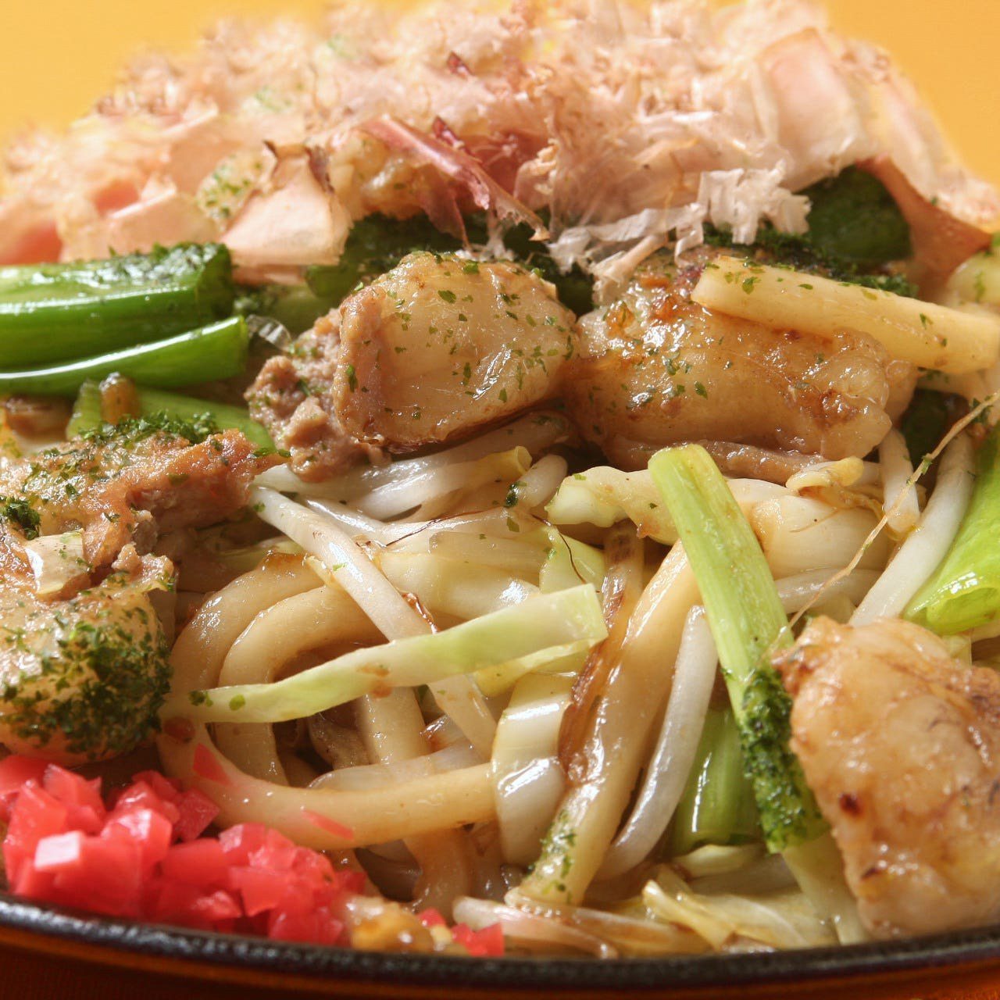
| 営業時間 | 11:00〜13:30（L.O.13:00）／17:00〜21:15（L.O.20:45）※食材が無くなり次第閉店 |
|---|---|
| 定休日 | 定休日なし（不定休あり。当日の営業時間と臨時休業は公式サイトとGoogleの「特別営業時間」で告知） |
| 住所 | 岡山県岡山市北区奉還町1-6-9 |
| 予約 | 可（電話またはネット予約） — ☎ 086-253-9776 ／ 公式サイト |
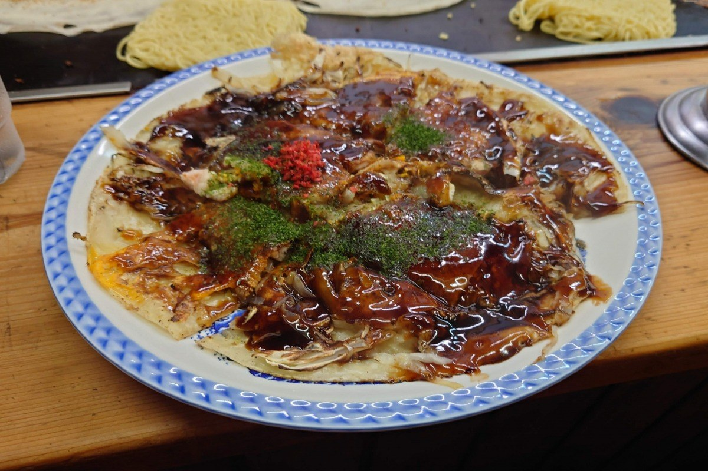
| 営業時間 | 11:00〜20:00 |
|---|---|
| 定休日 | 木曜日 |
| 住所 | 岡山県岡山市北区桑田町10-7 |
| 予約 | 未確認 — ☎ 086-232-6791 |
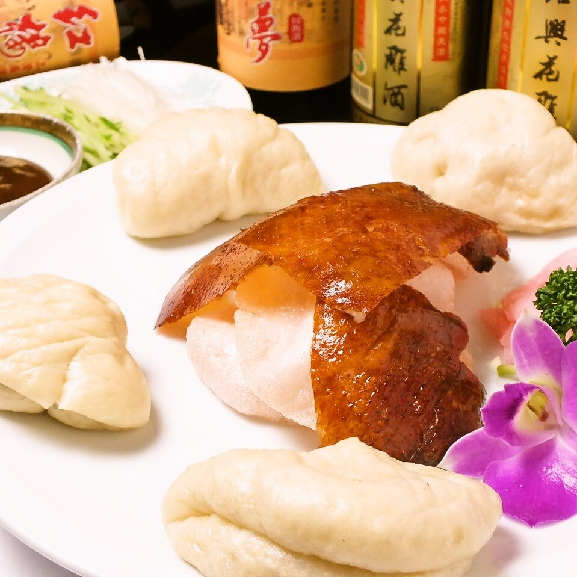
| 営業時間 | 月・水〜日・祝 11:30〜15:00（料理L.O.14:30）／17:00〜22:00（料理L.O.20:45・ドリンクL.O.21:00） |
|---|---|
| 定休日 | 火曜日 |
| 住所 | 岡山県岡山市北区表町3-14-10 |
| 予約 | 可（ネット予約・電話。団体は要相談） — ☎ 086-222-3351 |
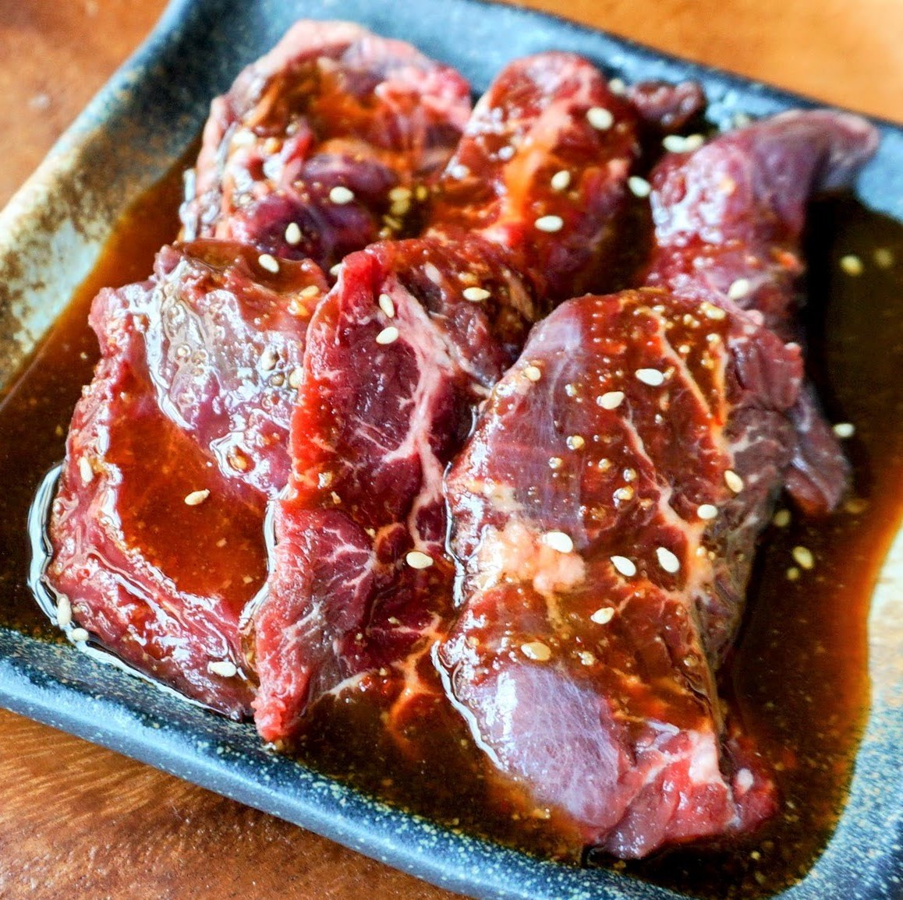
| 営業時間 | 月〜木・日・祝 17:00〜翌0:00（料理・ドリンクL.O.23:30）／金・土・祝前日 17:00〜翌1:00（料理・ドリンクL.O.翌0:30） |
|---|---|
| 定休日 | 無休 |
| 住所 | 岡山県岡山市北区田町2-4-7 |
| 予約 | 可（ネット予約可。店舗の貸切は不可） — ☎ 086-226-8161 |
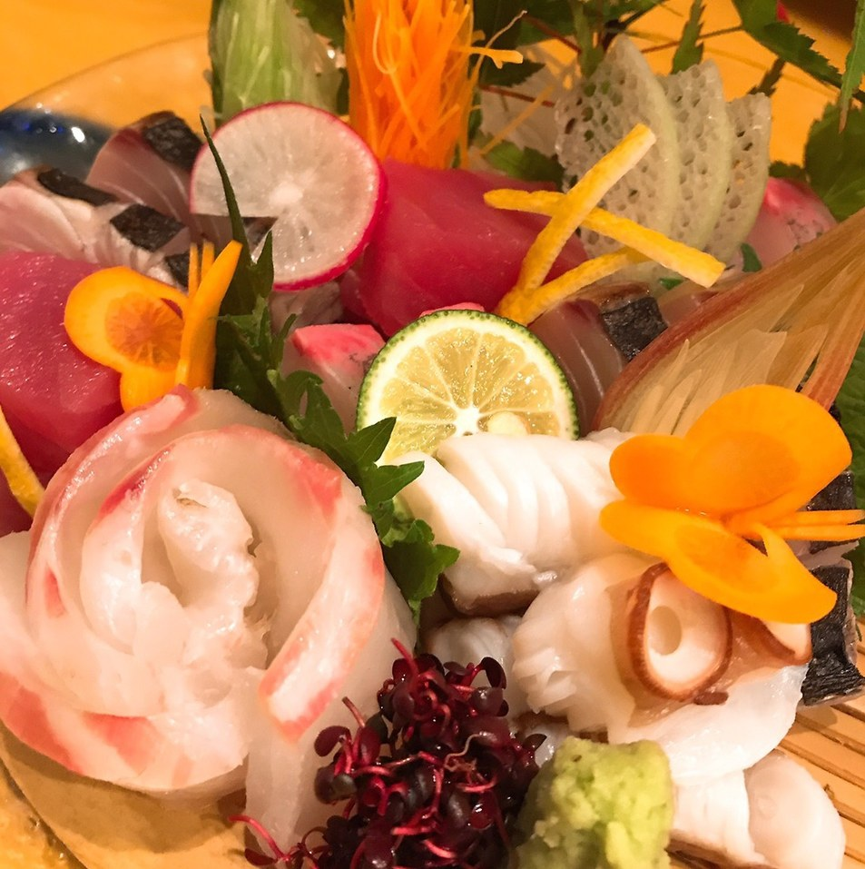
| 営業時間 | 月〜土・祝・祝前日 17:00〜翌0:00（料理L.O.23:00／ドリンクL.O.23:30） |
|---|---|
| 定休日 | 日曜（月曜が祝日の場合は日曜営業） |
| 住所 | 岡山県岡山市北区田町1-2-3 |
| 予約 | 可（ネット予約可。貸切は早めの問い合わせが必要） — ☎ 086-221-1200 |
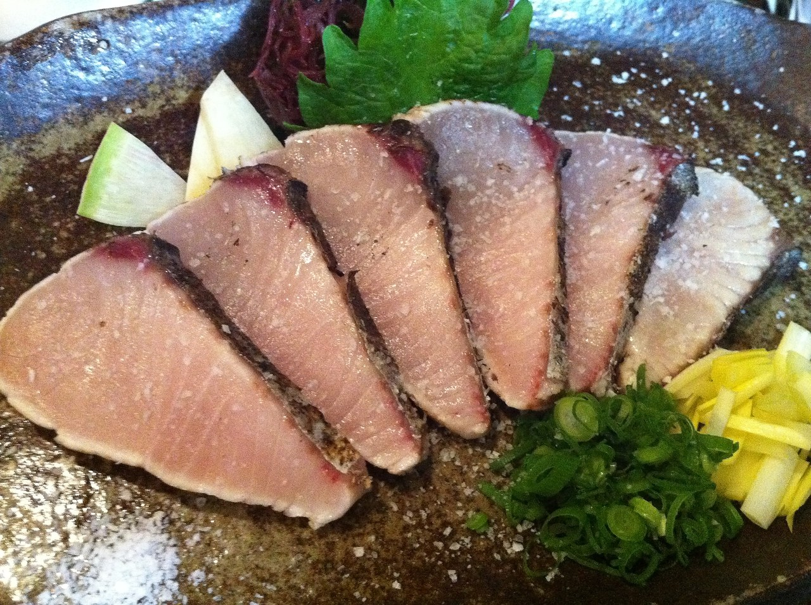
| 営業時間 | 18:00〜23:00（料理L.O.22:00／ドリンクL.O.22:30）※ホットペッパー掲載の時短営業の記載を採用。公式サイトの店舗情報ページには「平日18:00〜25:00（L.O.24:30）／日曜・祝日18:00〜24:00」とあり食い違うため、新しいほうを採った |
|---|---|
| 定休日 | 水曜 |
| 住所 | 岡山県岡山市北区柳町2-1-7 ラポールビル1F |
| 予約 | 電話のみ（ネット予約は受け付けていない） — ☎ 086-801-2828 ／ 公式サイト |
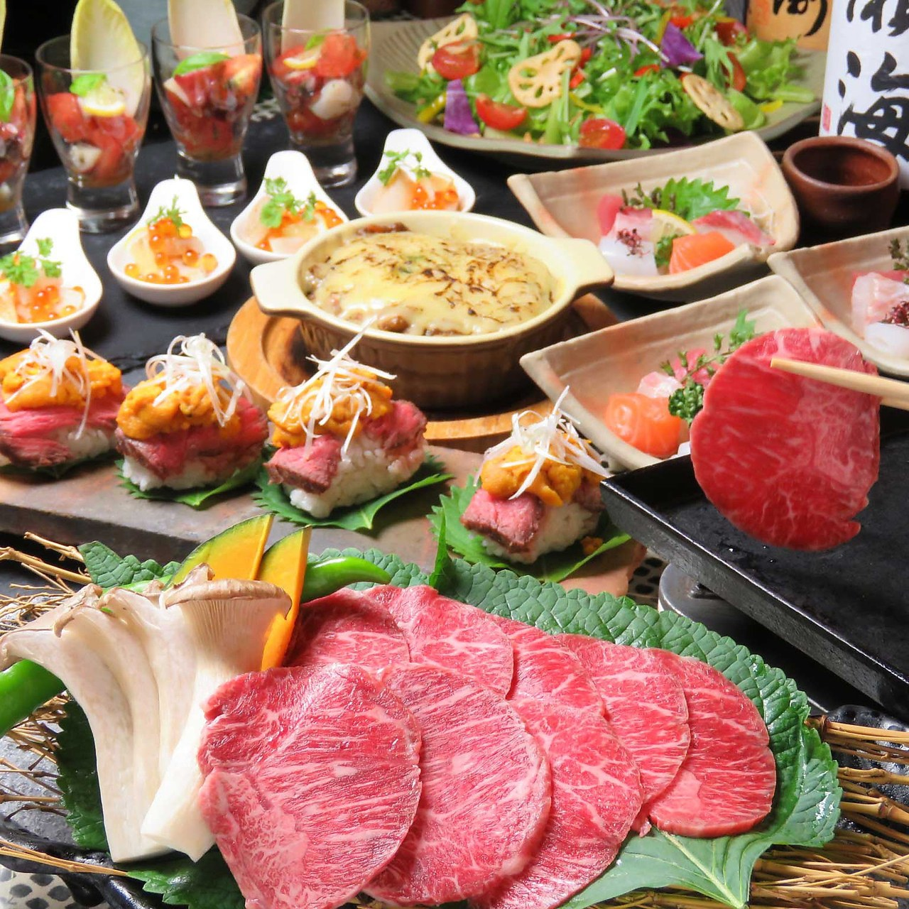
| 営業時間 | 月〜土・祝・祝前日 18:00〜翌0:00（料理・ドリンクL.O.23:30） |
|---|---|
| 定休日 | 日曜 |
| 住所 | 岡山県岡山市北区南中央町2-14 長瀬ビル1F 102 |
| 予約 | 可（ネット予約可。店舗貸切は最大32名） — ☎ 086-201-2347 |
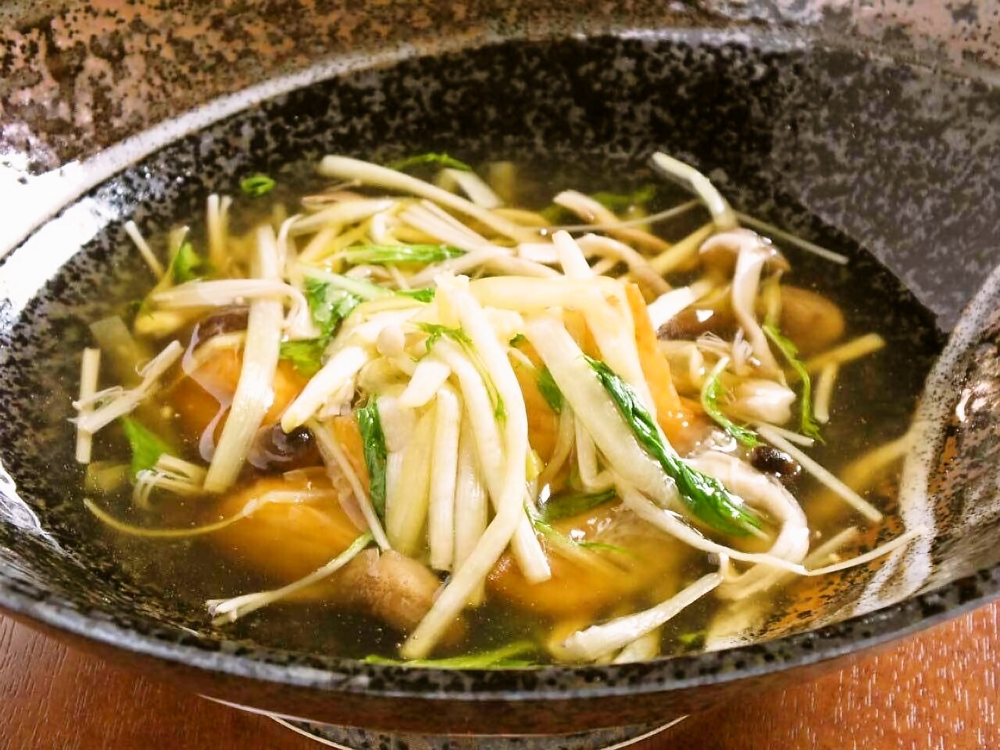
| 営業時間 | 月〜土・祝・祝前日 17:00〜22:30（料理・ドリンクL.O.22:00） |
|---|---|
| 定休日 | 日曜（日月が連休のときは月曜休み。20名以上の宴会は相談可） |
| 住所 | 岡山県岡山市北区奉還町1-2-12 |
| 予約 | 可（ネット予約可。個室30名まで、店全体の貸切は約50名まで） — ☎ 086-214-6783 |
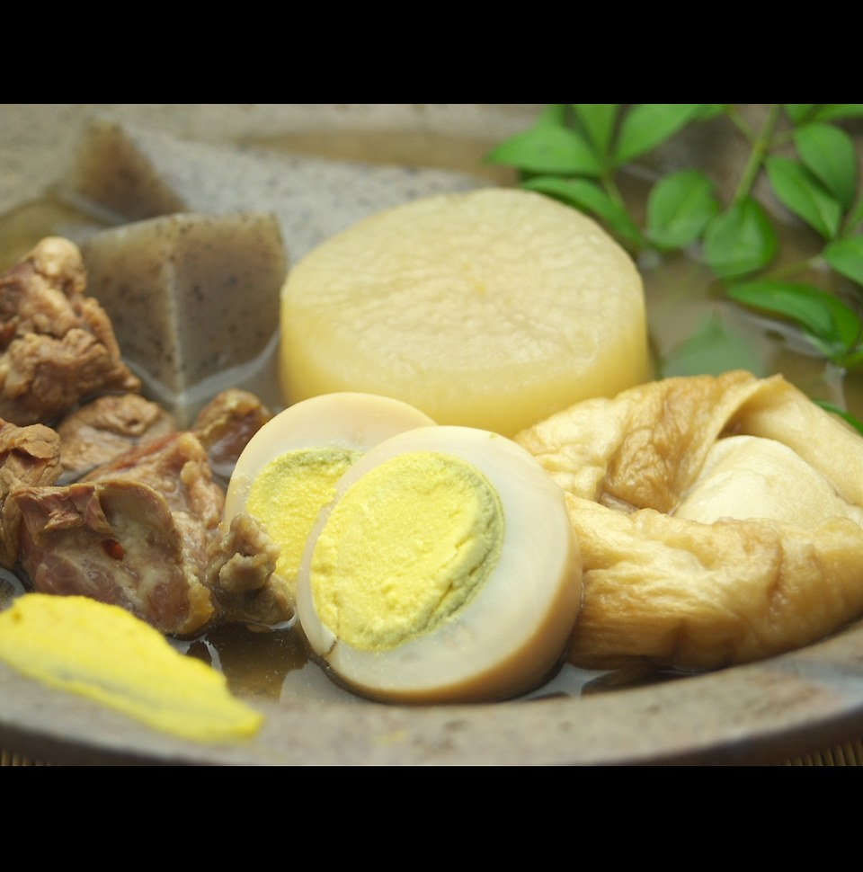
| 営業時間 | 月〜土 17:00〜23:00（料理・ドリンクL.O.22:30） |
|---|---|
| 定休日 | 日曜・祝日（日月が連休のときは日曜営業、月曜が祝日のときは月曜休み） |
| 住所 | 岡山県岡山市北区磨屋町7-7 |
| 予約 | 可（ネット予約可。2階座敷は14〜20名で貸切可） — ☎ 086-233-5802 |
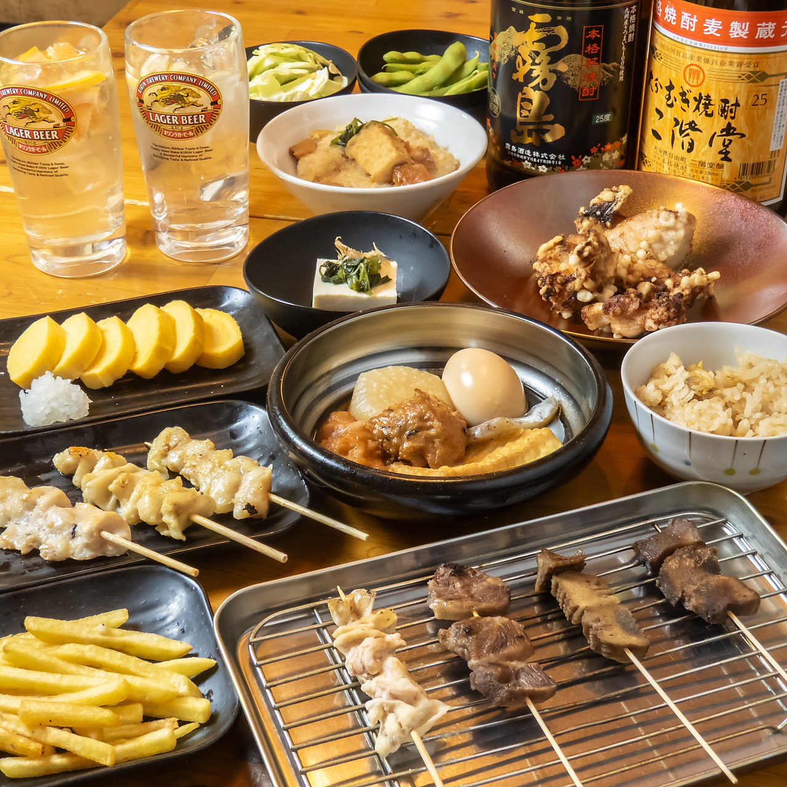
| 営業時間 | 火〜日・祝・祝前日 12:00〜22:00（料理・ドリンクL.O.21:00） |
|---|---|
| 定休日 | 月曜（月曜が祝日のときは翌火曜が休み） |
| 住所 | 岡山県岡山市北区表町1-11-1 中之町第一ビル1F |
| 予約 | 可（ネット予約可。貸切は要相談） — ☎ 080-8333-1000 |
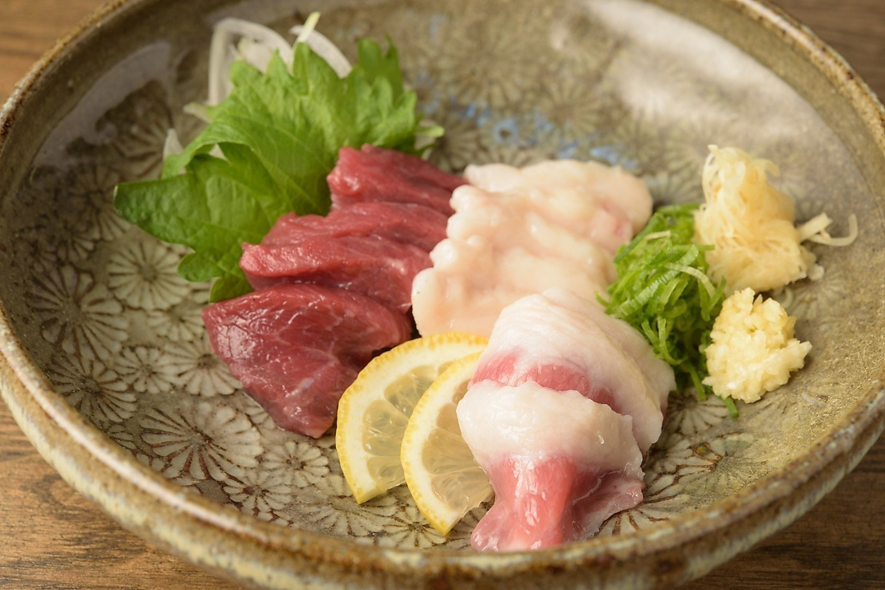
| 営業時間 | 火〜木・日 17:00〜23:00（料理L.O.22:00／ドリンクL.O.22:30）／金・土 17:00〜翌0:00（料理L.O.23:00／ドリンクL.O.23:30） |
|---|---|
| 定休日 | 月曜（月曜が祝前日のときは営業） |
| 住所 | 岡山県岡山市北区表町2-6-50 |
| 予約 | 可（ネット予約可。貸切は要相談） — ☎ 086-238-9981 |
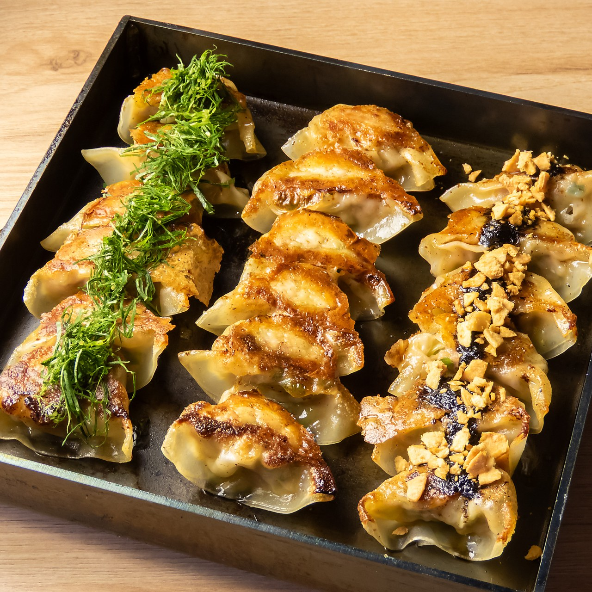
| 営業時間 | 月〜土・祝前日 17:00〜翌0:00（料理・ドリンクL.O.23:30）／日・祝 15:00〜22:30（料理・ドリンクL.O.22:00） |
|---|---|
| 定休日 | 不定休 |
| 住所 | 岡山県岡山市北区問屋町15-101 |
| 予約 | 可（ネット予約可。貸切は要相談） — ☎ 086-239-4411 |
| 営業時間 | 昼 11:30〜14:00(L.O.13:30／平日は予約優先・当日来店は要電話) / 夜 17:00〜23:00(L.O.22:30) |
|---|---|
| 定休日 | 水曜日 |
| 住所 | 岡山県岡山市北区奉還町2-10-11 |
| 予約 | 可(ネット予約・電話予約とも可。平日の昼は予約優先) — ☎ 050-5484-5299 ／ 公式サイト |
| 営業時間 | 昼 11:30〜14:00(料理L.O.13:00) / 夜 17:00〜21:30(料理L.O.20:30)。金・土・祝前日も同じく昼夜営業 |
|---|---|
| 定休日 | 無休 |
| 住所 | 岡山県岡山市北区本町3番2号 あらたセカンドビル2F |
| 予約 | 可(ネット予約は来店当日20時まで受付) |
| 営業時間 | 11:30〜14:30(料理L.O.14:00) / 17:00〜22:00(料理L.O.21:30) |
|---|---|
| 定休日 | 火曜日 |
| 住所 | 岡山県岡山市北区一宮93-1 |
| 予約 | 可 — 公式サイト |
| 営業時間 | 11:30〜14:00(L.O.14:00) / 17:00〜22:00(L.O.22:00)。仕入れの状況により早く閉めることがある |
|---|---|
| 定休日 | 不定休 |
| 住所 | 岡山県岡山市北区表町3-13-65 2階 |
| 予約 | 可(ネット予約は来店当日23時まで受付) — ☎ 090-3705-2950 |
| 営業時間 | 火・水・日・祝 17:00〜翌4:30(料理L.O.翌4:00)、木 17:00〜翌4:30、金・土・祝前日 17:00〜翌5:00(料理L.O.翌4:30) |
|---|---|
| 定休日 | 月曜日 |
| 住所 | 岡山県岡山市北区田町2-12-25 1F |
| 予約 | 可(ネット予約は来店日の翌4時まで受付) — ☎ 086-224-2236 |
| 営業時間 | 火〜土・祝・祝前日 17:30〜22:30(L.O.22:00)、日 17:30〜21:30(L.O.21:00) |
|---|---|
| 定休日 | 月曜日（月曜が祝日の場合は翌日。月に1度連休あり） |
| 住所 | 岡山県岡山市北区柳町1-12-16 |
| 予約 | 可(ネット予約は来店当日17時まで受付) — ☎ 086-201-1304 |
| 営業時間 | 月・水〜金・祝前日 11:30〜14:00(L.O.13:30)／17:00〜23:00(L.O.22:30)、土・日・祝 11:30〜23:00(L.O.22:30) |
|---|---|
| 定休日 | 火曜日 |
| 住所 | 岡山県岡山市北区桑田町13-28 |
| 予約 | 可(ネット予約は来店当日21時まで受付) — ☎ 070-1445-5171 |
| 営業時間 | 11:00〜15:00(L.O.14:30) / 17:00〜22:00(L.O.21:30) |
|---|---|
| 定休日 | 水曜日（祝日の場合は翌日） |
| 住所 | 岡山県岡山市中区浜2-1-27 |
| 予約 | 可(ネット予約は来店当日15時まで受付) — ☎ 086-272-7547 |
| 営業時間 | 11:00〜22:00(L.O.21:00) |
|---|---|
| 定休日 | なし |
| 住所 | 岡山県岡山市北区下石井2丁目10番8号 杜の街プラザ1F |
| 予約 | 一部可(コースは予約可) — ☎ 080-2953-5062 ／ 公式サイト |
| 営業時間 | 昼 11:30〜14:30（L.O.13:30）／夜 18:00〜22:00（L.O.21:00） |
|---|---|
| 定休日 | 日曜日（月曜が祝日の場合は日曜営業・翌月曜休み）、ほか不定休あり |
| 住所 | 岡山県岡山市北区田町2丁目1-3 BOSCO 2F |
| 予約 | 可（電話・テーブルチェックのWEB予約。コースは一部を除き前日まで、ランチコースは2日前までの予約が必須。5名以上は電話） — ☎ 086-206-6220 ／ 公式サイト |
| 営業時間 | 17:00〜23:00（金・土曜は17:00〜23:30）。夜のみの営業で昼の営業はなし |
|---|---|
| 定休日 | 不定休（詳細はInstagramで要確認） |
| 住所 | 岡山県岡山市北区錦町3-4 山佐ビル1F |
| 予約 | 可（電話・WEB予約。コース料理は前日までの予約制。予約客はワンドリンク制、当日キャンセルはコース代金100%） — ☎ 086-227-1117 ／ 公式サイト |
| 営業時間 | 月〜水・日 17:30〜22:00（L.O.21:00）／金・土 17:30〜23:00（L.O.22:00）。夜のみの営業 |
|---|---|
| 定休日 | 木曜日（ほか不定休あり） |
| 住所 | 岡山県岡山市北区駅元町28-13 |
| 予約 | 可（電話・ネット予約。席のみ予約の当日無断キャンセルは1名6,000円、コースは100%のキャンセル料） — ☎ 050-5494-8608 ／ 公式サイト |
| 営業時間 | 11:00〜15:00（料理・ドリンクL.O.14:30）／18:00〜翌0:00（料理・ドリンクL.O.23:30）。22時以降はバー営業 |
|---|---|
| 定休日 | 木曜日 |
| 住所 | 岡山県岡山市北区問屋町11-105 |
| 予約 | 可（電話・ネット予約。即予約は来店日当日22時まで受付） — ☎ 086-239-1729 |
| 営業時間 | 月〜木 18:00〜22:00（料理L.O.21:30）／金・土・祝日・祝前日 18:00〜23:00（料理L.O.22:30）。夜のみの営業 |
|---|---|
| 定休日 | 日曜日（月曜が祝日の場合は日曜営業・翌月曜が振替休業） |
| 住所 | 岡山県岡山市北区中山下1丁目5番地32 梅田ビル1F |
| 予約 | 可（電話・ネット予約。14名以上で貸切可、平日は10名から相談可） — ☎ 086-238-6599 ／ 公式サイト |
| 営業時間 | 火〜日・祝日・祝前日 11:00〜15:30（L.O.15:00）／18:00〜22:00（L.O.21:00） |
|---|---|
| 定休日 | 月曜日（月曜が祝日の場合は祝日後が休みになることがある） |
| 住所 | 岡山県岡山市北区問屋町11-106 BLD201 |
| 予約 | 可（電話・ネット予約。貸切は不可） — ☎ 086-243-0880 |
| 営業時間 | 11:00〜14:30（L.O.14:30）／17:30〜22:00（L.O.21:30） |
|---|---|
| 定休日 | なし（年中無休） |
| 住所 | 岡山県岡山市南区福富西2丁目19番36号 サンガーデンWEST 1F 105号 |
| 予約 | 可（電話・ネット予約。即予約は来店日当日21時まで、リクエスト予約は3日前まで） — ☎ 086-250-5830 |
| 営業時間 | ランチ 11:30〜14:30（L.O.14:00）／ディナー 17:00〜21:00（L.O.20:30） |
|---|---|
| 定休日 | なし（年中無休） |
| 住所 | 岡山県岡山市北区西崎1丁目8-30 |
| 予約 | 可（電話・公式サイトのフォーム・ネット予約。麻辣火鍋は完全予約制で3〜4日前まで。キャンセルは3日前まで） — ☎ 086-201-6040 ／ 公式サイト |
| 営業時間 | 月〜土・祝前日 17:30〜22:00（料理L.O.21:00／ドリンクL.O.21:30）。夜のみの営業 |
|---|---|
| 定休日 | 日曜・祝日・第2月曜（ほか不定休。予約は朝10時から電話で受付） |
| 住所 | 岡山県岡山市北区岩田町2 順正学園岡山駅前キャンパス1F |
| 予約 | 可（電話・ネット予約。コース予約は来店当日14時以降のキャンセルで1名あたり50%のキャンセル料。20名から貸切相談可） — ☎ 086-221-7055 |
| 営業時間 | 11:30〜18:00（ラストオーダー17:30） |
|---|---|
| 定休日 | 火曜（祝日の場合は翌日） |
| 住所 | 岡山県岡山市北区出石町1-8-23 |
| 予約 | 未確認 — ☎ 086-221-9939 ／ 公式サイト |
| 営業時間 | 11:00〜23:00（料理ラストオーダー22:00／飲み物ラストオーダー22:00） |
|---|---|
| 定休日 | 火曜 |
| 住所 | 岡山県岡山市北区問屋町26-101 2F |
| 予約 | 可（ネット予約あり） |
| 営業時間 | 9:00〜18:00（喫茶ラストオーダー17:00） |
|---|---|
| 定休日 | 第1月曜日・第3月曜日（祝日や繁忙期にあたる場合は営業し、翌平日に休む） |
| 住所 | 岡山県岡山市中区中納言町7-32 |
| 予約 | 不要 — ☎ 086-272-2268 |
| 営業時間 | 9:00〜17:30（ラストオーダー17:00） |
|---|---|
| 定休日 | 12月29日・30日・31日 |
| 住所 | 岡山県岡山市北区丸の内2-3-1 岡山城天守閣1階 |
| 予約 | 未確認（持ち帰りの扱いはなし） — ☎ 086-206-2330 ／ 公式サイト |
| 営業時間 | 11:00〜18:00（ラストオーダー17:30）※7〜9月は11:00〜19:00（ラストオーダー18:30）／木・金・土は夜のパフェ営業あり |
|---|---|
| 定休日 | 火曜・年末年始 ※7〜9月は無休 |
| 住所 | 岡山県岡山市北区奉還町1丁目5-15 |
| 予約 | 未確認 — ☎ 086-236-8511 ／ 公式サイト |
| 営業時間 | 11:30〜18:00 ※7〜9月は〜19:00 |
|---|---|
| 定休日 | 月曜（祝日の場合は翌日）※不定休あり |
| 住所 | 岡山県岡山市北区丸の内2丁目12-16 |
| 予約 | 未確認 — ☎ 050-8882-9350 ／ 公式サイト |
| 営業時間 | 10:00〜18:00（ラストオーダー17:45）※11〜2月は10:00〜17:00（ラストオーダー16:45） |
|---|---|
| 定休日 | 無休 ※1月・2月のみ水曜（祝日の場合は営業） |
| 住所 | 岡山県岡山市北区下足守402-3 |
| 予約 | 不要 — ☎ 086-295-0394 ／ 公式サイト |
| 営業時間 | 10:00〜16:30 |
|---|---|
| 定休日 | 水曜 |
| 住所 | 岡山県岡山市北区芳賀5385-6 |
| 予約 | 未確認 — ☎ 080-6261-8910 ／ 公式サイト |
| 営業時間 | 9:00〜18:00 ※月曜は10:00〜 |
|---|---|
| 定休日 | 火曜 |
| 住所 | 岡山県岡山市北区表町1丁目9-65 |
| 予約 | 未確認 — ☎ 086-226-5670 |
本ガイドは個人利用目的で作成。掲載情報は2026年10月時点の調査に基づく。写真出典: 各店の公式サイト・公式SNS、および地域情報サイト等の掲載写真（著作権は各サイト・各撮影者に帰属）。引用元は店ごとにカード内へ明記。